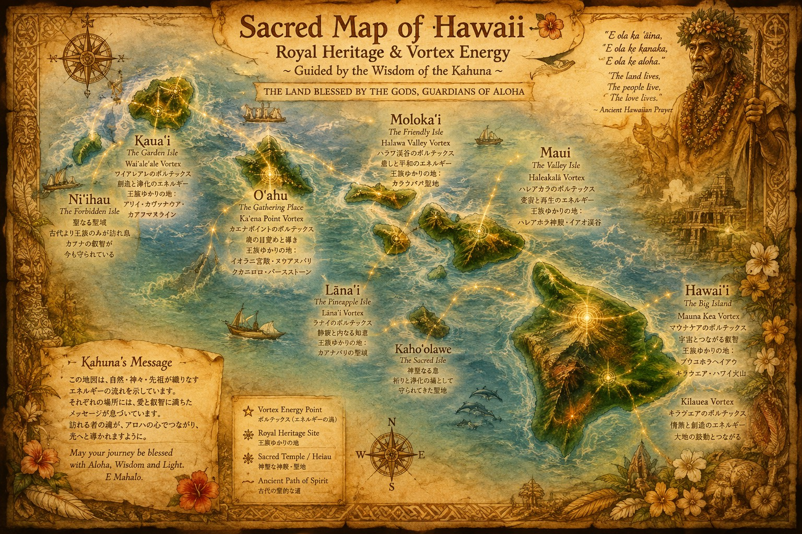
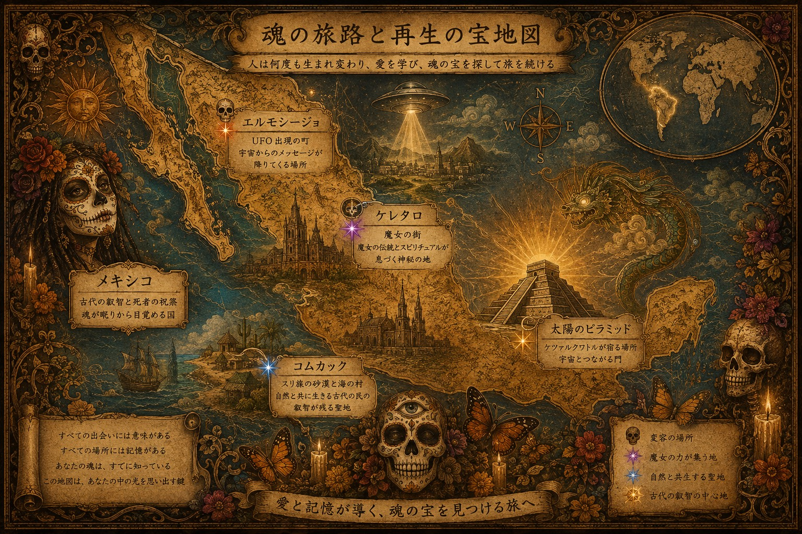
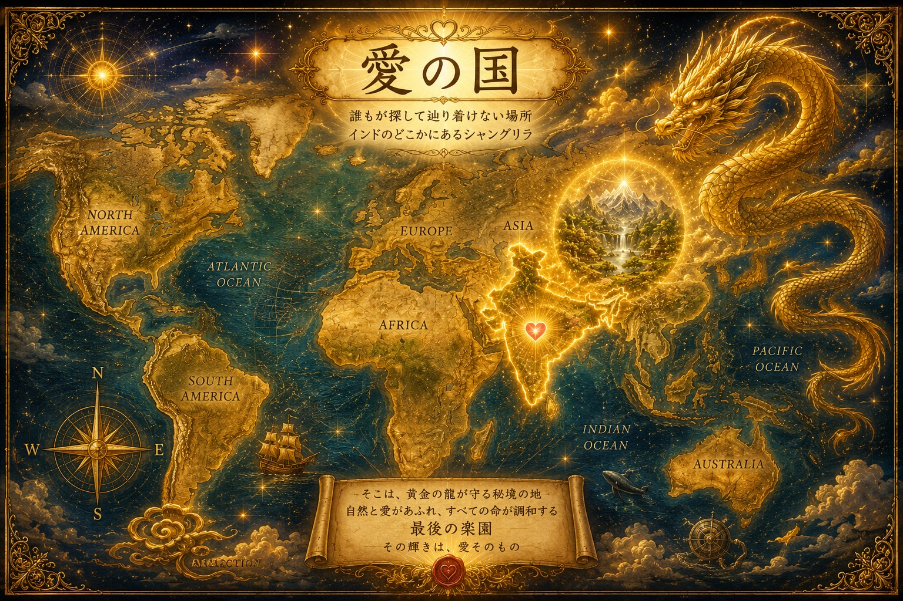

Challenge Accepted?
世界には、一般には立ち入ることのできない場所があります。
その扉を開く鍵は、お金ではなく「信頼」。
KAEは、現地の王族や神官、シャーマン、先住民族とのご縁を大切に育みながら、特別地域への通行許可や招待をいただいてきました。
あなたも、このクエストに挑戦できます。
通行許可書を持つKAEが、あなたを"特別地域"へご案内します。
さあ、新しい世界への招待状を手に入れましょう。
ハワイ島
王族しか立ち入ることのできない聖域へ。
王族の谷をはじめ、限られた人しか足を踏み入れられない場所で、王族に受け継がれてきた祈りや叡智に触れ、本来の自分と繋がる特別な体験をします。
火山・海・星空。自然そのものが神殿となる島で、自分の原点を思い出すクエストです。

メキシコ
シャーマンの叡智に触れ、本来眠っている能力を目覚めさせる旅。
砂漠と海に囲まれた壮大な大自然の中で、先住民族コムカック族との交流や、シャーマンスクールとのご縁をつなぎます。
自然と共に生きる智慧を学びながら、シャーマンの導きのもと、自分自身の感覚を研ぎ澄まし、本来持っている感性や能力を少しずつ開花させていきます。
秘境でのリトリートを通して、魂の次元を引き上げ、本来の自分を思い出す――。
それは、自然と一つになり、自分自身の可能性を解き放つ探検です。

インド・マニプール
純粋な愛が息づく秘境へ。
神々と共に暮らす人々。豊かな自然。古くから受け継がれてきた文化。
この地では、日常を離れ、自然と共鳴しながら、自分自身のエネルギーを整え、新しい自分へと生まれ変わる時間を過ごします。
心・身体・魂。すべてのエネルギーを入れ替え、軽やかな自分で次の人生のステージへ進むためのクエストです。

このクエストは、誰でも挑戦できます。
ただし、訪れる場所によっては現地からの招待や入域許可が必要になります。
その手続きや現地との橋渡しは、KAEが責任を持ってサポートします。
「行ってみたい。」
その想いが、この冒険のスタートです。